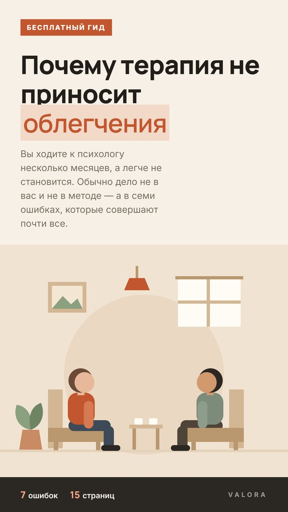
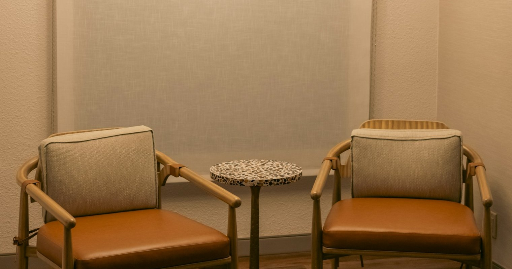

01
Тревога и бессонница
Не спите перед каждым созвоном с руководителем, прокручиваете разговоры по десять раз, держите в голове список того, что может пойти не так.
У работы есть предмет, ориентиры и срок. Через восемь-двенадцать встреч видно, что именно изменилось — по сну, по разговорам дома, по тому, как проходит рабочая неделя.
Анна Ремизова — психолог, 11 лет частной практики. Когнитивно-поведенческая терапия и схема-терапия, регулярная супервизия.
50 минут, чтобы сформулировать запрос и понять, подходим ли мы друг другу.
Запрос не обязан быть красивым и точным — его почти всегда уточняют на первых встречах. Достаточно узнать себя в одном из описаний.
Не спите перед каждым созвоном с руководителем, прокручиваете разговоры по десять раз, держите в голове список того, что может пойти не так.
Работа, которая раньше нравилась, стала невыносимой. Выходные не восстанавливают, отпуск помогает на четыре дня.
Соглашаетесь, когда хотите отказать. Одни и те же ссоры по кругу. Дома молчите, чтобы не начинать заново.
Внутри работает голос, который комментирует каждый шаг. Похвалу не слышно, ошибку помните годами.
Жизнь разделилась на «до» и «после». Окружающие ждут, что вы уже справились, а вы всё ещё внутри этого.
Скорая и кардиолог ничего не нашли, а приступы повторяются. Вы начали избегать метро, лифтов и больших магазинов.
Не нашли себя в списке? Напишите своими словами — на встрече-знакомстве разберёмся, подходит ли здесь терапия и с какого формата начинать.

Вы ходите к психологу несколько месяцев, а легче не становится. Обычно дело не в вас и не в методе — а в семи ошибках, которые совершают почти все.
Без рассылки и звонков. Только сам гид — одним письмом.
Я не даю советов и не объясняю, каким вам быть. Моя работа — помочь разобрать конкретную ситуацию на части и найти, где именно вы застреваете. Дальше меняете вы, а я держу структуру и темп.
Первые две-три встречи уходят на то, чтобы вас узнали. Это нормальный ход работы, а не потерянное время.

Пишете в двух словах, что происходит. Отвечаю в течение дня и предлагаю время.
50 минут: что с вами происходит, чего вы ждёте, подходим ли мы друг другу.
Формулируем, что должно измениться и по чему вы поймёте, что стало лучше.
Встреча и маленький шаг в промежутке. Регулярность важнее интенсивности.
Через месяц-полтора сверяемся: что сдвинулось, что уточнить, куда идём дальше.
Если кажется, что мы топчемся на месте — скажите об этом прямо на встрече. Это не грубость, а часть работы: обычно самый ценный материал.
У каждого есть предмет, ориентиры и срок. Онлайн и очно — одна цена.
50 минут, чтобы сформулировать запрос и понять, подходим ли мы друг другу.
8–12 встреч под конкретный запрос, с понятными ориентирами по дороге.
Раз в неделю без ограничения срока — если запрос шире одной ситуации.
Можно написать, если накрыло, и не ждать неделю до следующей сессии.
Я приходила с «мне просто плохо» и была уверена, что это на годы. На третьей встрече вдруг стало понятно, что речь про работу и про то, что я не умею отказывать. Через два месяца я впервые за долгое время спала нормальную неделю.
До этого был опыт, где мы полгода разговаривали и ничего не менялось. Здесь на каждой встрече понятно, что мы делаем и зачем, и есть что-то маленькое на неделю. Это оказалось решающим.
Отдельно ценно, что на знакомстве мне честно сказали, чего ждать и чего не ждать. Без обещаний «станет легче после первой встречи». Стало легче, но не сразу — и я была к этому готова.
Отзывы опубликованы с письменного согласия. Имена изменены, детали запросов обобщены — конфиденциальность важнее убедительности.
Под конкретный запрос — обычно 8–12 встреч раз в неделю. Если запрос шире одной ситуации, работа идёт дольше и без жёсткого срока. Точную цифру никто не назовёт заранее, но на третьей встрече мы вместе прикинем ориентир и сверимся через месяц. Это ориентир из практики, а не обещание результата: темп у каждого свой.
Для большинства запросов — да, разницы в результате нет. Очный формат заметно выигрывает, если вам трудно удерживать внимание дома или нет места, где вас не слышно. Многие начинают очно и переходят в онлайн, когда работа уже набрала ход.
Встреча-знакомство именно для этого и нужна — это знакомство, а не обязательство. Если после двух-трёх встреч ничего не сдвинулось, скажите прямо: мы либо поменяем способ работы, либо я порекомендую коллегу с другим подходом. Сравнивать специалистов — абсолютно нормально.
Да. Всё, что вы говорите, не выходит за пределы кабинета. Исключение одно и оно оговаривается на первой встрече: прямая угроза жизни — вашей или чужой. Случаи, которые я разбираю на супервизии, обезличены: коллега не знает ни имени, ни узнаваемых деталей.
Психиатр — врач, он ставит диагноз и назначает лекарства. Я не врач и препараты не назначаю. При выраженной депрессии, тяжёлой тревоге или панических атаках лучше всего работает связка: психиатр подбирает поддержку, мы параллельно разбираем то, что её запустило. Если увижу такие признаки — скажу прямо и подскажу, к кому пойти.
Можно, если предупредить за сутки — тогда перенос бесплатный. Просьба не переносить встречу просто потому, что на этой неделе стало полегче: пропуски ровно в такие моменты — одна из главных причин, по которым работа буксует.
Расскажите в двух словах, что происходит. Отвечу, подходит ли здесь терапия и с какого формата разумнее начать. Первый шаг — это одно сообщение, а не обязательство.
Заполните — свяжусь и предложу два-три ближайших окна.